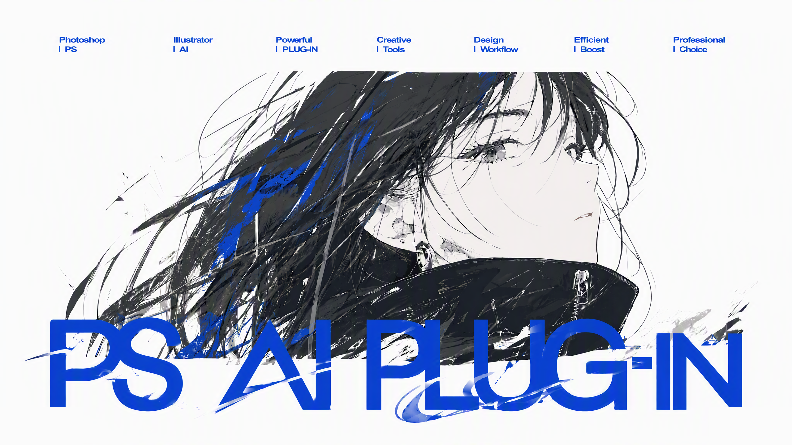

Codex Adobe Tools Archive
统一归档 Photoshop、Illustrator 和 PS+AI 联动脚本。独立 ZIP 整包下载，展开查看包内文件。

没有匹配的插件。
Package Manifest
清单加载中...
Contact
插件和网站制作者：周上杰
脚本为作者使用 Codex 自制并调试，如有疑问和 BUG 或者优化反馈，欢迎飞书小窗联系。
微信zsj692938